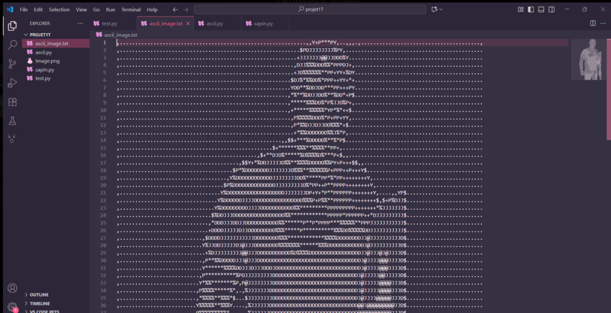

Explication ligne par ligne du code (ASCII art)
Le code transforme une image en ASCII art. Voici l'explication détaillée, ligne après ligne.
Ligne 1
import PIL.Image
On importe le module Image du package PIL (Pillow). Pillow permet de
charger, manipuler et sauvegarder des images.
Ligne 2
img_flag = True
Variable img_flag initialisée à True. Sert à indiquer si l'image est
chargée. (Peu utile dans ce code.)
Ligne 3
path = input("Enter the path to the image field : \n")
Demande à l'utilisateur d'entrer le chemin du fichier image.
Ligne 4--8
try:
img = PIL.Image.open(path)
img_flag = True
except:
print(path, "Unable to find image ");
On tente d'ouvrir l'image :\
- si succès → img contient l'objet image, img_flag = True.\
- si échec → affiche un message d'erreur.
Ligne 9
width, height = img.size
On récupère la largeur (width) et la hauteur (height) de l'image.
Ligne 10
aspect_ratio = height/width
Calcule le rapport hauteur/largeur pour conserver les proportions.
Ligne 11
new_width = 120
Fixe la largeur de l'image redimensionnée à 120 caractères.
Ligne 12
new_height = aspect_ratio * new_width * 0.55
Calcule la nouvelle hauteur proportionnelle. Le facteur 0.55 corrige
la différence entre pixels et caractères textuels.
Ligne 13
img = img.resize((new_width, int(new_height)))
Redimensionne l'image avec la nouvelle largeur et hauteur.
Ligne 14
img = img.convert('L')
Convertit l'image en niveaux de gris (L → luminosité, valeurs 0--255).
Ligne 15
chars = ["@", "J", "D", "%", "*", "P", "+", "Y", "$", ",", "."]
Liste de caractères ASCII utilisés. Les plus denses (@, %)
représentent les zones sombres, les plus légers (., ,) les zones
claires.
Ligne 16
pixels = img.getdata()
Récupère tous les pixels de l'image sous forme de valeurs 0--255.
Ligne 17
new_pixels = [chars[pixel//25] for pixel in pixels]
Associe chaque pixel à un caractère selon son intensité (pixel//25 →
index entre 0 et 10).
Ligne 18
new_pixels = ''.join(new_pixels)
Concatène la liste de caractères en une seule grande chaîne.
Ligne 19
new_pixels_count = len(new_pixels)
Compte le nombre total de caractères (pixels transformés).
Ligne 20
ascii_image = [new_pixels[index:index + new_width] for index in range(0, new_pixels_count, new_width)]
Découpe la grande chaîne en lignes de new_width caractères.
Ligne 21
ascii_image = "\n".join(ascii_image)
Ajoute des retours à la ligne pour former l'ASCII art lisible.
Ligne 22--23
with open("ascii_image.txt", "w") as f:
f.write(ascii_image)
Crée le fichier texte ascii_image.txt et y écrit l'image en ASCII art.
Conclusion
Ce programme :
-
Charge une image.
-
La redimensionne pour l'adapter au texte.
-
La convertit en niveaux de gris.
-
Transforme chaque pixel en caractère ASCII.
-
Construit une version texte de l'image.
-
Sauvegarde le résultat dans un fichier
.txt.
Test du code
import PIL.Image
img_flag = True
path = input("Enter the path to the image field : \n")
try:
img = PIL.Image.open(path)
img_flag = True
except:
print(path, "Unable to find image ");
width, height = img.size
aspect_ratio = height/width
new_width = 120
new_height = aspect_ratio * new_width * 0.55
img = img.resize((new_width, int(new_height)))
img = img.convert('L')
chars = ["@", "J", "D", "%", "*", "P", "+", "Y", "$", ",", "."]
pixels = img.getdata()
new_pixels = [chars[pixel//25] for pixel in pixels]
new_pixels = ''.join(new_pixels)
new_pixels_count = len(new_pixels)
ascii_image = [new_pixels[index:index + new_width] for index in range(0, new_pixels_count, new_width)]
ascii_image = "\n".join(ascii_image)
with open("ascii_image.txt", "w") as f:
f.write(ascii_image)
Resultat
